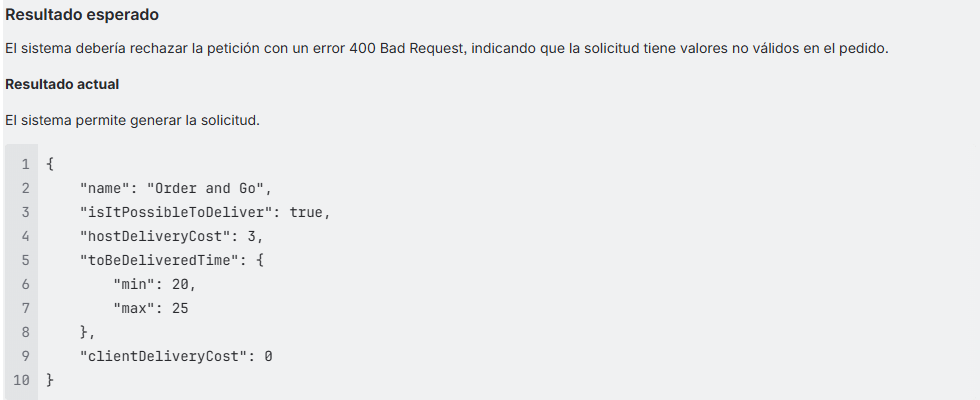

Pruebas de API REST – Urban Grocers (2025)
Objetivo: Validar endpoints de creación y modificación de kits. Logro: Aseguré la confiabilidad evitando errores críticos.
Experiencia en pruebas funcionales, validación de APIs REST, reportes de defectos y análisis de datos. Entrego evidencia clara y procesos reproducibles para equipos ágiles.
Ingeniera de QA con experiencia en pruebas funcionales manuales, validación de APIs REST y gestión de incidencias. Orientada a la mejora continua, eficiencia en procesos y entrega de productos de alta calidad. Busco crecer en roles que ayuden a optimizar la experiencia del usuario y reducir riesgos en producción.
Objetivo: Validar endpoints de creación y modificación de kits. Logro: Aseguré la confiabilidad evitando errores críticos.

Objetivo: Verificar flujo de reserva y compartir automóvil. Logro: Reducción de fallos en producción gracias a pruebas manuales y documentación.
Objetivo: Filtrar logs y automatizar detección de errores HTTP. Solución: Scripts con grep y reportes vinculados.
Objetivo: Identificar patrones y compañías con baja participación. Solución: Consultas con GROUP BY, HAVING y CASE.
Si quieres ver evidencia, discutir una oportunidad o revisar cualquier proyecto, contáctame: